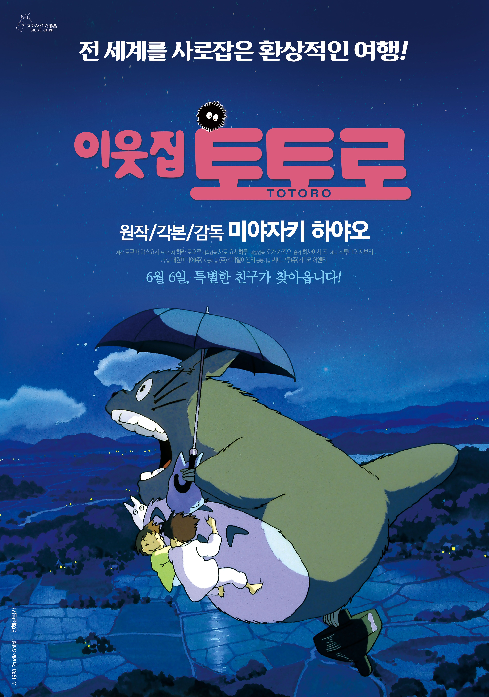
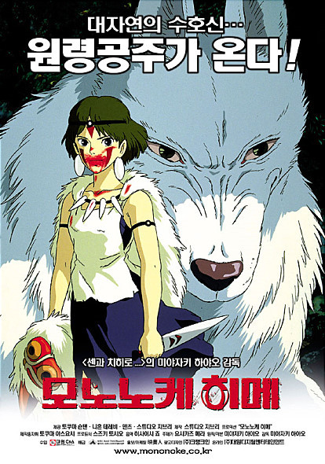

일본의 애니메이션 제작사.
세계적인 명성을 가진 미야자키 하야오 감독 등의 장편 애니메이션으로 유명한 곳.
1985년 7월 15일, 전년도에 《바람계곡의 나우시카》를 만들기 위해 제작 거점으로
삼은 '톱 크래프트 스튜디오'를 이듬해 미야자키 하야오와 타카하타 이사오,
그리고 스즈키 토시오가 천공의 성 라퓨타를 제작하기 위해 토쿠마 서점의 투자를
받아 파산한 상태의 톱 크래프트를 인수하였고 이후 회사 이름을 변경하고 조직을
재편하여 탄생한 회사가 지금의 지브리다.
사명인 지브리(ghibli)는 '사하라 사막에 부는 열풍(熱風)'을 가리키는 이탈리아어로 리비아의 아랍어 방언에서 온 외래어이다. 2차 대전 당시 이탈리아 군용정찰기에 붙은 명칭이고 마세라티 기블리의 유래이기도 했다. 명명자는 미야자키 하야오. 그는 어릴 적부터 비행기 마니아로 이 단어를 먼저 비행기 이름에서 알고 나중에 그 어원을 알게 되었다. '애니메이션 업계에 선풍(旋風)을 일으키자'는 의미로 스튜디오 이름을 지었다고 한다.
미야자키 하야오(일본어: 宮﨑 駿, みやざき はやお, 영어: Hayao Miyazaki, 1941년 1월 5일~)는 일본의 애니메이션 감독이자 애니메이터이다.
제2차 세계 대전 중인 1941년 1월 5일 도쿄도 분쿄 구에서 태어나 가쿠슈인 대학에 진학하여 경제학을 전공하였다. 대학 재학 중에 청소년 신문에 만화를 기고하였으며, 1963년 졸업 후 도에이 애니메이션(東映動画)에 입사하여 후일 동업자가 되는 타카하타 이사오(高畑 勲)와 함께 본격적인 애니메이션 제작에 들어갔다.
《미래소년 코난》(1978년)·《빨강머리 앤》(1979년)에 이어 세계 멸망과 부흥이라는 극적인 소재와 환경이란 주제를 다뤘던《바람 계곡의 나우시카》(1984년)로 크게 성공하였다. 또한, 《마녀 배달부 키키》와 《붉은 돼지》는 상영된 그해 일본 최고의 흥행성적을 기록하였고, 컴퓨터그래픽을 이용하여 만든 《모노노케 히메(もののけ姬)》(1997년)는 제작비 20억 엔을 투자하여 1400만 명 이상의 관객을 동원하였다.
1984년에 타카하타 이사오와 함께 스튜디오 지브리(Studio Ghibli)를 창단하고 이후 《천공의 성 라퓨타》(1986년)·《마녀 배달부 키키》(1986년)·《이웃집 토토로》(1988년)·《추억은 방울방울》(1991년)·《붉은 돼지》(1992년)·《귀를 기울이면》(1995년)·《모노노케 히메》(1997년) 등을 성공적으로 발표한다. 애니메이션으로서는 최초로 베를린 영화제의 금곰상을 수상한 《센과 치히로의 행방불명》(2001년)은 일본에서도 2천4백만 관객을 동원하는 일본영화 사상 최고의 흥행기록을 세웠다.[1] 이후 《하울의 움직이는 성》(2004)을 만들었고, 2006년에는 그의 아들 미야자키 고로가 《게드 전기》를 감독, 제작하였는데 이전의 지브리 작품들보다 미흡한 점이 있었으나 그림과 음악은 훌륭하다는 평가를 받았다.
빨간머리 앤주근깨 빼빼 마른 빨간머리 앤.다카하타 이사오 감독 | 애니메이션 | 100분 |
천공의 성 라퓨타구름 너머 전설의 성이 드러난다!미야자키 하야오 감독 | 애니메이션 | 124분 |

이웃집 토토로숲속에 살고 있는 특별한 친구를 만났다!미야자키 하야오 감독 | 애니메이션 | 87분 |

반딧불이의 묘오누이는 함께라서 행복했습니다.다카히타 이사오 감독 | 애니메이션 | 89분 |
마녀배달부 키키초보마녀 키키의 마법 같은 모험!미야자키 하야오 감독 | 애니메이션 | 102분 |

추억은 방울방울내가 진정으로 원가는 것은..!다카히타 이사오 감독 | 애니메이션 | 119분 |

붉은 돼지낭만을 꿈꾸는 로맨티스트미야자키 하야오 감독 | 애니메이션 | 90분 |
폼포코 너구리 대작전맘 고생 심한 너구리들의 인간연구 프로젝트!다카히타 이사오 감독 | 애니메이션 | 119분 |
귀를 기울이면설레이는 첫사랑의 기억이 들려옵니다!!콘도 요시후미 감독 | 애니메이션 | 111분 |

모노노케 히메대자연의 수호신... 원령공주가 온다!미야자키 하야오 감독 | 애니메이션 | 135분 |

센과 치히로의 행방불명금지된 세계의 문이 열렸다!미야자키 하야오 감독 | 애니메이션 | 126분 |
고양이의 보은고양이 왕국에 초대받다!모리타 히로유키 감독 | 애니메이션 | 75분 |

하울의 움직이는 성마법에 걸린 순간, 마법사의 성문이 열렸다!미야자키 하야오 감독 | 애니메이션 | 119분 |
게드전기2006년, 지브리의 새로운 신화가 탄생한다!!미야자키 고로 감독 | 애니메이션 | 115분 |
벼랑 위의 포뇨모두가 반해버린 사랑스런 소녀가 온다!미야자키 하야오 감독 | 애니메이션 | 100분 |
마루 밑 아리에티10cm 소녀, 마루 위 세상으로 뛰어들다!요네바야시 히로마사 감독 | 애니메이션 | 94분 |
쿠쿠리코 언덕에서첫사랑의 설렘이 다시 찾아옵니다.미야자키 고로 감독 | 애니메이션 | 91분 |
바람이 분다바람이 당신을 데려온 그 순간을미야자키 하야오 감독 | 애니메이션 | 126분 |
가구야공주 이야기달빛과 함께 온 그녀에게 하루는 기적입니다다카히타 이사오 감독 | 애니메이션 | 137분 |

추억의 마니시공을 초월한 판타지요네바야시 히로마사 감독 | 애니메이션 | 103분 |